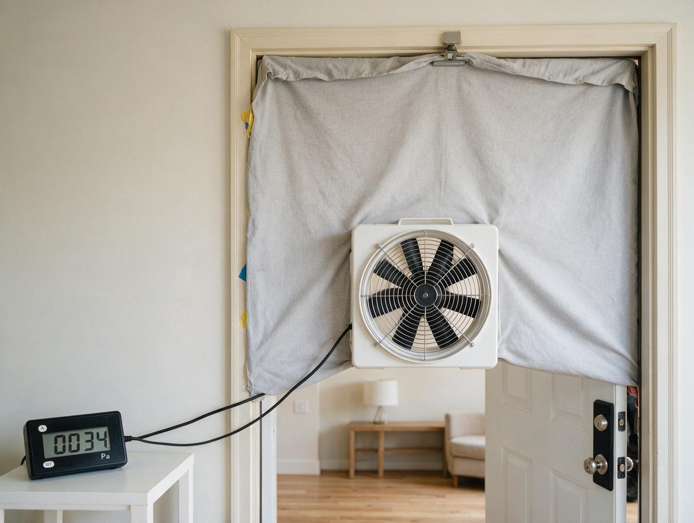

By the Editorial Team | Published: August 2026 | Last Updated: August 2026
The Envelope Inputs That Drive Every Manual J Heat Loss Calculation
Manual J heat loss calculations are only as accurate as the envelope data the designer feeds into them. The methodology is standardized, the equations are simple, and the software is mature. Where good calculations diverge from bad ones is in the quality of the wall assemblies, window specifications, insulation R-values, and infiltration estimates that the designer captures during envelope survey.
This guide walks through the specific inputs that determine whether a Manual J number is trustworthy or fictional. The framework applies to new construction and retrofit projects alike, though the data collection process differs between the two.
Wall Assemblies and What Actually Determines R-Value
A residential wall is a composite assembly: framing lumber, cavity insulation, exterior sheathing, exterior finish, interior finish, and any additional layers like housewrap, rigid foam, or air gaps. Each component contributes to the overall R-value, but the parallel heat-flow path through framing (studs, headers, plates) is the dominant source of composite R-value uncertainty on wood-framed walls.
A wall with R-13 cavity insulation between 2x4 studs at 16 inches on center has a whole-wall R-value of roughly R-10 to R-11 because the studs conduct heat around the insulation. Adding continuous exterior rigid foam substantially improves the whole-wall value because the foam covers the framing. Manual J tables account for this composite behavior when the designer specifies the assembly type correctly; assumed R-values from insulation-only ratings overestimate performance.
Designer measurements for wall inputs:
- Total wall area by orientation (north, east, south, west), subtracting window and door areas.
- Wall construction type from the drawings or physical inspection.
- Actual insulation type and thickness in the cavity.
- Presence and thickness of continuous exterior insulation.
- Any thermal bridges (steel framing, uninsulated headers) that reduce whole-wall performance.
Windows and Why NFRC Labels Matter
Windows are often the largest single heat-loss surface per square foot because their R-values are much lower than any wall assembly. A typical double-pane low-emissivity window has a U-factor around 0.30 (R-value about 3.3), compared to R-10 to R-25 for wall assemblies. On homes with substantial glazing, windows can drive 25 to 35 percent of total heat loss.

The National Fenestration Rating Council (NFRC) label on new windows publishes the U-factor and solar heat gain coefficient tested to a standard protocol. Manual J uses the U-factor directly. Retrofit projects often lack current NFRC data; the designer estimates from window age, glazing type, and frame material using standard reference tables that give reasonable defaults for older windows.
Common window inputs:
- Total glazing area by orientation.
- U-factor from NFRC label or from age-based estimates.
- Frame material and construction (aluminum with thermal break, vinyl, wood, fiberglass) which affects composite performance.
- Glazing type (single, double, triple) and coatings (low-e, gas fill) for retrofit estimation.
Ceiling and Attic Considerations
Ceiling heat loss depends on whether the attic is vented (typical) with insulation at the ceiling plane, or unvented (sealed with foam insulation on the roof deck) creating conditioned attic space. In vented attics the ceiling R-value is the sum of drywall, air film, and attic-floor insulation. In unvented attics the ceiling is treated as an interior partition and the roof deck becomes the boundary.
Designer measurements for ceiling inputs:
- Ceiling area (typically same as house floor area on single-story, adjusted for cathedral ceilings or dropped ceilings).
- Attic type (vented or unvented sealed).
- Insulation type and depth measured at multiple points because attic insulation compresses and settles over time.
- Whether there are gaps, thin spots, or bypasses (recessed lights, chimney chases, attic hatches) that create localized heat-loss paths not captured by average R-value.
Floor and What Is Below
Floor heat loss depends heavily on what is on the other side. A floor over a heated basement has near-zero design heat loss. A floor over a vented crawlspace has substantial heat loss because the crawlspace temperature approaches outdoor temperature. A slab-on-grade floor has heat loss to soil, which is different from surface heat loss because soil temperatures moderate through the year.
Manual J uses different methodologies for each condition:

- Floors over conditioned space: no design heat loss counted.
- Floors over unconditioned space (unheated basement, vented crawlspace): area x Delta-T divided by the floor R-value, with Delta-T set to a fraction of outdoor Delta-T reflecting the buffered temperature below.
- Slab-on-grade: perimeter-based heat loss because most of the slab's heat loss is through the exterior edge to soil surface, not through the slab center to deep soil.
Infiltration and Blower Door Testing
Infiltration is the least precise input in most Manual J calculations because it depends on construction quality, house geometry, and outdoor conditions in ways that are hard to estimate visually. A blower door test measures the actual airtightness of the house by pressurizing to 50 pascals and reading the airflow required to maintain that pressure. The result in air changes per hour at 50 pascals (ACH50) converts to natural infiltration through published correlations that account for climate, shielding, and house height.
Current energy codes require blower door tests on most new residential construction, which means new-build Manual J calculations have accurate infiltration inputs. Retrofit calculations often lack test data and rely on visual construction quality categories from the Manual J tables.
Envelope Input Sources at a Glance
| Input | New construction source | Retrofit source |
|---|---|---|
| Wall R-value | Architectural drawings + specifications | Site visit + drilled inspection or wall type |
| Window U-factor | NFRC label on installed windows | Age-based estimate from reference tables |
| Attic R-value | Installer certification of insulation depth | Ruler measurement at multiple attic points |
| Infiltration rate | Blower door test (code required) | Blower door test if available, otherwise construction category |
| Total square footage by floor | Architectural drawings | Tape measurement of each conditioned room |
| Ceiling type | Roof plan and section details | Attic inspection |
Frequently Asked Questions
How much does input quality actually change the Manual J number?
Substantially. Accurate versus assumed inputs can shift the design heat loss by 20 to 40 percent on many homes. Errors of that magnitude move equipment sizing by one or two size steps, which is enough to affect efficiency, comfort, and equipment life. Time spent on input quality pays back in installation quality.
What is a blower door test and how much does it cost?
A blower door is a calibrated fan mounted in an exterior door frame that pressurizes or depressurizes the house to a specified pressure differential, typically 50 pascals. The airflow through the fan at that pressure equals the total leakage rate. A standalone blower door test on a residential home typically costs $150 to $300; it is included in most HERS ratings and often bundled with energy audits.
Should the calculation use as-built or as-designed envelope specifications?
As-built when possible. Construction changes happen between design and final envelope on most projects, and the actual R-values and infiltration rates matter for equipment sizing. On new construction, blower door tests and installer certifications provide the as-built data. On retrofit, site inspection is the source.
How are unusual assemblies (SIPs, ICFs, cordwood, straw bale) handled?
Manual J allows custom composite R-value calculation for non-standard assemblies. Structural insulated panels and insulated concrete forms have manufacturer-published R-values that plug directly into the calculation. Truly unusual assemblies (cordwood, straw bale, earthbags) may need engineering judgment on the effective R-value.
How is a home with a walkout basement (partly above grade, partly below) handled?
The walls are split by elevation. The above-grade portion counts as normal above-grade wall heat loss. The below-grade portion counts as basement wall heat loss to soil, with a different soil temperature assumption. The Manual J software handles the split when the designer defines the wall by elevation.
Do garage walls and doors count as envelope?
Only if the garage is conditioned (heated). An attached but unheated garage is treated as a buffer space, and the wall between the garage and the conditioned house is the envelope boundary. The uninsulated garage door and exterior walls do not contribute to house heat loss.
How does adding a room addition affect the Manual J calculation?
The addition adds envelope surface area (walls, windows, ceiling, floor) at the addition's specifications. The whole-house Manual J recalculates with the new surfaces included. If the addition shares a wall with the original house, that shared wall becomes an interior partition with no design-condition heat loss.
What is the practical difference between a blower door test at 50 Pa versus a natural infiltration estimate?
The blower door test measures actual air leakage at a specific test pressure. Natural infiltration is the leakage that happens at real-world outdoor conditions (typically a few pascals of pressure differential caused by wind and stack effect). Manual J converts the 50 Pa test result to natural infiltration through published correlation factors that account for climate zone, house height, and shielding. The conversion is standardized and reduces the test-to-load error to within 10 percent typically.
